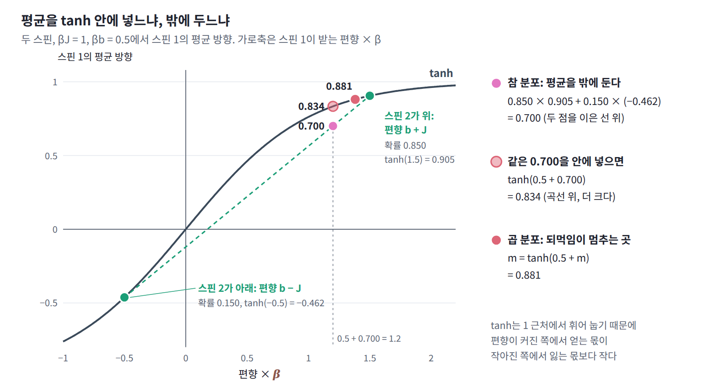

평균장 근사: 각 스핀은 이웃의 평균만 본다
앞의 표에서 가장 나은 곱 분포는 편향이 있으면 참 평균보다 더 쏠렸고, 편향이 없어도 결합이 강하면 두 스핀을 모두 한쪽으로 몰았다. 가장 나은 곱 분포는 왜 늘 참 분포보다 한쪽으로 더 쏠리며, 그 m은 어떤 규칙을 따를까?
역사: 바이스의 분자장과 파이얼스의 부등식
원자 자석 하나가 나머지 전체의 평균에만 반응한다는 생각은 이징 모형보다 먼저 나왔다. 철이 퀴리 온도 아래에서 저절로 자석이 되는 까닭을 설명하려고, 프랑스의 물리학자 피에르 바이스는 1907년 논문 「분자장 가설과 강자성」에서 대담한 가정을 했다. 원자 자석들은 서로 독립인데, 다만 자석 전체의 자화에 비례하는 가상의 자기장 속에 함께 놓여 있다는 것이다. 바이스는 이 가상의 자기장을 분자장이라 불렀다. 장(場, field)은 자기장의 장과 같은 말로, 원자 하나를 한쪽으로 미는 편향을 뜻한다. 원자 자석 하나가 한 방향을 따르는 정도는 이 분자장이 정하고, 모든 원자가 그렇게 따른 결과가 다시 자화가 된다. 자화가 자화를 만드는 이 순환에서 두 가지 결론이 나왔다. 어떤 온도 아래에서는 바깥 자기장 없이도 자화가 스스로를 유지하고, 그 온도 위에서는 자화율이 온도와 그 경계 온도의 차이에 반비례한다는 퀴리–바이스 법칙이다. 문제는 분자장이 어디서 오는지였다. 원자 자석 사이의 자기적인 힘으로는 그만한 크기가 나오지 않아 바이스는 기원을 설명하지 못했고, 1928년 하이젠베르크가 양자역학의 교환 상호작용(전자들 사이에 작용하는 양자역학적 효과)을 찾아내고서야 크기가 맞았다. 1970년 노벨상 강연에서 루이 네엘은 바이스의 설명이 이론적으로 매우 만족스러웠지만 「분자장이 균일하다는 것을 교리처럼 받아들이게 만드는 단점이 있었고, 이것이 이론의 발전을 분명히 늦추었다」고 돌아보았다.
같은 생각은 자석 밖으로도 퍼져서, 1934년 브래그와 윌리엄스는 합금 속 원자 배열의 질서와 무질서를 같은 근사로 계산했다.
바이스의 가정이 편의를 위한 어림을 넘어 가장 나은 선택이라는 것은 나중에 드러났다. 1938년 파이얼스는 「자유에너지의 최소 성질에 관하여」에서 다루기 쉬운 후보 분포(시험 분포, trial distribution)로 어림한 자유에너지가 참 자유에너지보다 작아질 수 없다는 것을 증명했다. 같은 부등식은 뒤에 이를 널리 쓴 보골류보프와 파인만의 이름을 더해 깁스–보골류보프–파인만 부등식이라고도 불린다. 이 부등식 덕분에 근사는 「자유에너지를 가장 낮게 만드는 후보 분포 고르기」라는 최적화 문제가 되었다.
tanh 안의 평균과 밖의 평균
F[q]를 m₁으로 미분해 0으로 놓으면 가장 나은 곱 분포가 만족하는 조건이 나온다. 엔트로피 항의 도함수가 −kT·artanh m₁이므로 조건은 아래 왼쪽 식이다. 그 곁에는 참 분포에서 정확히 성립하는 식을 두었다. 스핀 2의 방향을 알고 나면 스핀 1은 편향 b + Js₂를 받는 홀로 선 스핀이 되어 평균이 tanh(β(b + Js₂))이고, 이것을 스핀 2의 분포로 평균한 것이 ⟨s₁⟩이다.
두 식의 차이는 평균을 tanh 안에 넣느냐 밖에 두느냐뿐이다. 곱 분포의 스핀 1은 스핀 2를 평균값 m₂에 굳혀 두고, 그 평균이 만드는 편향 b + Jm₂에만 반응한다. 이렇게 다른 변수들을 평균값에 굳혔을 때 한 변수가 받는 편향을 평균장(나머지 변수들의 평균이 한 변수에 만드는 겉보기 편향, mean field)이라 부른다. 반면 참 분포의 스핀 1은 스핀 2가 위를 향할 때의 큰 편향 b + J와 아래를 향할 때의 작은, 때로는 반대 방향인 편향 b − J를 번갈아 받는다. 앞 표의 첫 줄(βJ = 1, βb = 0.5)에 숫자를 넣어 보자. 스핀 2가 위를 향할 확률이 0.850이므로 참 평균은 0.850 × tanh(1.5) + 0.150 × tanh(−0.5) = 0.700이다. 그런데 같은 0.700을 tanh 안에 넣으면 tanh(0.5 + 0.700) = 0.834로 이미 더 크다. tanh는 입력이 커질수록 1 근처에서 거의 늘지 않아서, 편향이 커진 쪽에서 얻는 몫이 편향이 작아진 쪽에서 잃는 몫보다 작기 때문이다. 곱 분포에서는 여기에 순환이 더해진다. 부풀려진 m₁이 스핀 2의 평균장을 키우고, 커진 m₂가 다시 m₁을 키우는 되먹임이 m = 0.881에 이르러서야 멈춘다.

편향이 없을 때는 같은 되먹임이 대칭을 깨뜨린다. m₁ = m₂ = m으로 두면 조건은 m = tanh(βJm)이 되는데, βJ가 1보다 작으면 해가 0 하나뿐이지만 1보다 크면 0이 아닌 해 ±0.859(βJ = 1.5)가 생기고 F[q]는 그쪽이 더 낮다. 참 분포의 두 스핀은 「같은 방향이되 위와 아래가 반반」이라는 상관으로 결합 에너지를 얻는다. 곱 분포는 상관을 표현할 수 없으니, 결합 에너지를 얻으려면 한쪽을 골라 두 스핀을 모두 그쪽으로 쏠리게 할 수밖에 없다. βJ = 3에서 참 분포는 (위, 위)와 (아래, 아래)에 0.499씩 나뉘어 있는데, 곱 분포는 그 가운데 하나에 거의 모든 확률을 싣는다. 한 봉우리를 통째로 버렸으니 틈은 「두 봉우리 중 어느 쪽인가」에 해당하는 1비트, 곧 ln 2에 다가간다.
이제 패턴을 정리할 수 있다. 가장 나은 곱 분포에서 각 변수의 분포는 나머지 변수들을 평균값에 굳혀 놓은 볼츠만 분포다. 이웃의 흔들림이 평균 하나로 바뀌므로 각 변수는 실제보다 한결같은 편향을 받고, 그래서 곱 분포는 참 분포보다 한쪽으로 더 쏠린다. 참 분포에 봉우리가 여럿이면 곱 분포는 그중 하나를 고른다.
스핀 N개의 이징 모형
스핀이 둘일 때 찾은 이 규칙은 스핀이 수백 개인 계에서도 그대로 성립할까? 그리고 그렇게 고른 곱 분포의 자유에너지는 참 자유에너지와 어떤 관계에 있을까? 스핀 N개가 짝마다 결합 Jᵢⱼ, 스핀마다 편향 bᵢ로 묶인 이징 모형 E(s) = −Σ_{i<j} Jᵢⱼsᵢsⱼ − Σᵢbᵢsᵢ에 같은 일을 해 보자. 곱 분포 q(s) = q₁(s₁)q₂(s₂)⋯q_N(s_N)에서는 서로 다른 스핀의 곱의 평균이 평균의 곱이 되므로 ⟨sᵢsⱼ⟩_q = mᵢmⱼ이고, 자유에너지는 평균 방향 mᵢ들만의 함수가 된다. 이것을 mᵢ로 미분해 0으로 놓으면 스핀 둘일 때와 같은 모양의 조건이 스핀마다 하나씩 나온다.
부등식은 F[q] − F = kT × D_KL(q‖p) ≥ 0에서 오고, 양변에 −β를 곱하면 ln Z ≥ −βF[q], 곧 계산할 수 있는 ln Z의 아래쪽 한계가 된다. 이처럼 서로 독립인 변수들의 곱 분포 가운데 F[q]가 가장 낮은 것으로 볼츠만 분포를 대신하는 것을 평균장 근사 (곱 분포 안에서 자유에너지를 최소화해 볼츠만 분포를 대신하는 근사, mean-field approximation)라 한다. 오른쪽 식에서는 구하려는 값 mᵢ가 양변에 모두 들어 있어서, 답은 이 식에 넣었을 때 스스로와 맞아떨어지는 값이어야 한다. 그래서 이런 식을 자기 일관 방정식(self-consistent equation)이라 부른다. 여기서 자기는 자석의 자기(磁氣)가 아니라 「스스로」라는 뜻이다.
ML에서: 볼츠만 머신의 평균장 학습
볼츠만 머신의 학습 규칙은 결합 Jᵢⱼ를 ⟨sᵢsⱼ⟩_데이터 − ⟨sᵢsⱼ⟩_모델에 비례해 바꾼다. 빼는 둘째 항, 곧 모델 쪽 평균을 구하는 음의 단계(negative phase)에는 모델의 샘플이 필요한데, 상전이 아래에서는 샘플링하는 마르코프 사슬가 한쪽 봉우리에 갇혀 모델 분포의 절반만 본다. 샘플링은 무척 느리기도 했다.
1987년 텍사스 오스틴의 기업 연구소 MCC에 있던 카스텐 피터슨과 제임스 앤더슨은 이 항을 평균장으로 대신했다. 그들은 논문 요약에 「시간이 많이 드는 상관의 확률적 측정을 결정론적 평균장 방정식의 해로 대체한다」고 쓰고, XOR·인코더·선 대칭 문제에서 10~30배 빨라졌다고 보고했다. 자기 일관 방정식으로 mᵢ를 구하고 짝 평균마저 두 평균의 곱으로 한 번 더 근사해 ⟨sᵢsⱼ⟩_모델 ≈ mᵢmⱼ로 두면(논문의 표기로는 VᵢVⱼ) 샘플링이 필요 없고, 그들은 이 방정식이 본래 병렬적이어서 병렬 계산기에 곧바로 올릴 수 있다는 점도 강조했다.
평균장은 샘플링하지 않으니 연쇄처럼 갇히지는 않지만, 봉우리가 둘인 모델에서 처음부터 한 봉우리를 골라 답한다는 점에서는 같은 절반만 본다. 게다가 mᵢmⱼ에는 두 뉴런이 평균에서 함께 벗어나는 몫, 곧 공분산이 들어 있지 않다.